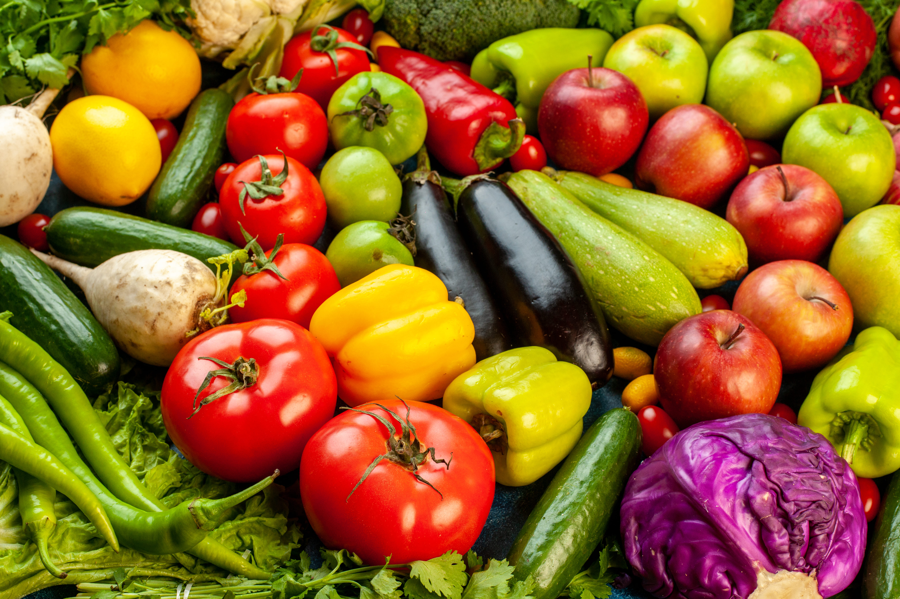
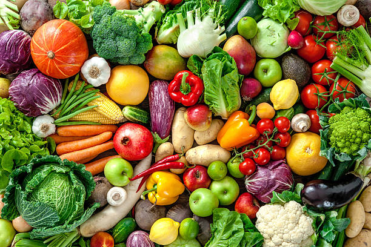
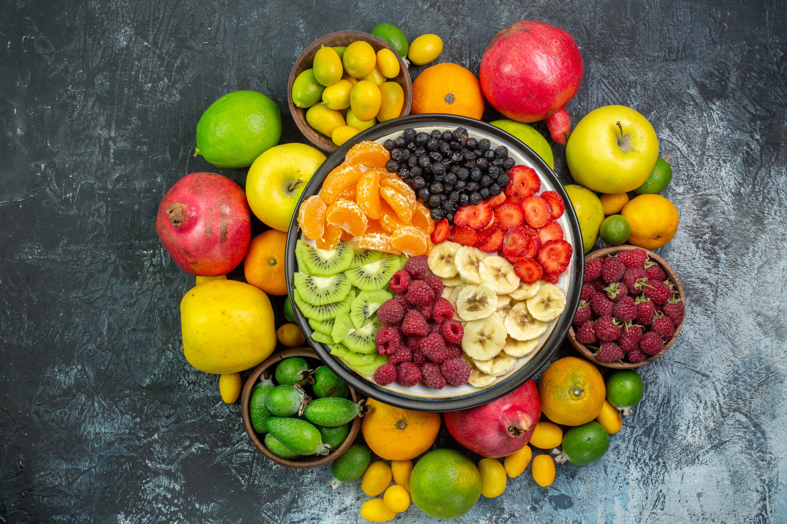
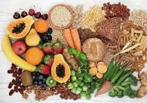

Supplier of Fruit & Vegetable Dry and Freeze-Dried Powders
Sun Labs is a reliable supplier of high-quality fruit and vegetable dry powders and freeze-dried powders for food, ice-cream, nutraceutical, pharmaceutical, and wellness industries. We focus on purity, consistent quality, and hygienic processing.

Mango, Strawberry, Banana, Apple, Pomegranate, Citrus & more.

Beetroot, Carrot, Spinach, Tomato, Moringa, Pumpkin etc.

Premium quality powders with better color, aroma & nutrition.

Bulk & customized specifications as per industry requirement.
High-Quality Raw Materials: We source raw materials from reliable and verified suppliers to ensure freshness, purity, and consistency. Strict quality checks are performed on parameters such as appearance, moisture, and compliance with applicable food and safety standards. This ensures superior end-product quality and minimal rejections.
Hygienic Processing: All processing activities are carried out in clean and controlled environments using food-grade equipment. Standard hygiene practices, sanitation procedures, and regular inspections are followed to prevent contamination and maintain safety throughout the processing cycle.
Consistent Supply: We maintain well-planned production schedules, adequate inventory, and dependable logistics to ensure uninterrupted supply. Our operational planning enables us to meet regular demand as well as scale volumes during peak requirements.
Competitive Pricing: By optimizing sourcing, processing efficiency, and operational costs, we offer competitive pricing without compromising on quality. Transparent pricing structures and volume-based flexibility help buyers achieve better cost efficiency.
Vendor-Friendly Approach: We believe in building long-term partnerships through clear communication, flexibility in order quantities, customization support, and fair commercial terms. Our approach focuses on collaboration, reliability, and mutual business growth.
Food & Beverage Industry Uses: Fruit and vegetable powders are widely used as flavoring agents in snacks, soups, sauces, noodles, and ready-to-eat foods. They are also used in bakery products such as bread, cakes, cookies, and energy bars. These powders act as natural color and taste enhancers in beverages, smoothies, dairy products, baby foods, and instant food mixes due to their long shelf life and consistency.
Health & Nutritional Benefits: High-quality powders retain essential nutrients such as vitamins, minerals, antioxidants, and dietary fiber, especially when freeze-dried. They support immunity, digestion, and overall wellness. These powders are naturally low in fat, free from cholesterol, and suitable for health-conscious consumers, including those following calorie-controlled or diabetic-friendly diets.
Pharmaceutical & Nutraceutical Applications: Natural powders are extensively used in pharmaceutical and nutraceutical industries as base materials for capsules, tablets, sachets, and supplements. They serve as carriers for herbal and plant-based medicines and allow accurate dosing and blending in protein, vitamin, and mineral formulations.
Cosmetics & Personal Care Uses: Fruit and vegetable powders are used in cosmetic and personal care products such as face packs, masks, scrubs, soaps, and hair care formulations. Their antioxidant and nourishing properties support skin health, scalp care, and anti-aging solutions.
Animal Feed & Pet Nutrition: These powders are incorporated into animal feed and pet food to enhance nutritional value, improve digestion, boost immunity, and support overall health. They are increasingly preferred as natural alternatives to synthetic additives.
Food Security & Sustainability: Powdered products play a vital role in reducing food waste by converting surplus produce into long-lasting ingredients. They help minimize post-harvest losses, reduce storage costs, and support food security and sustainability initiatives worldwide.
Export & Global Trade Advantages: Fruit and vegetable powders are ideal for international trade due to their lightweight nature, long shelf life, and ease of bulk or retail packaging. They are widely supplied to global markets including the USA, Europe, the Middle East, and Asia.
Modern Lifestyle & Convenience: Powders offer quick preparation, easy consumption, and consistent nutrition without cooking. They are ideal for travel, sports nutrition, and busy lifestyles.
Global Perspective: Natural fruit and vegetable
Phone: 7780725981
Email: rambabu.cherala@sunlabs.in
We welcome inquiries from food, pharma, nutraceutical, and export buyers.